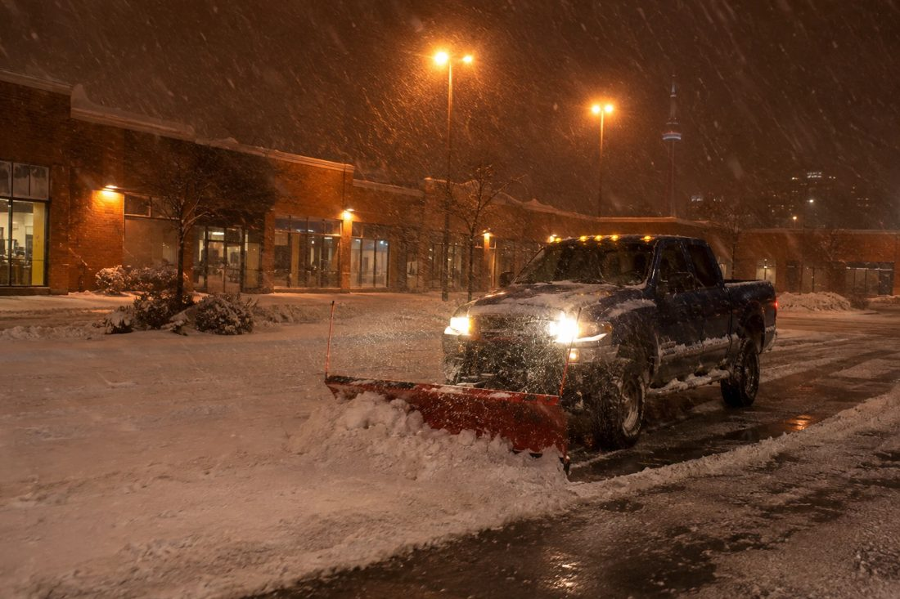
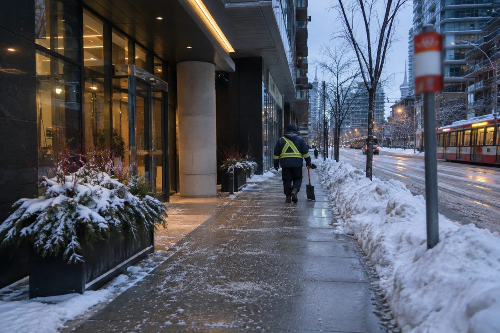
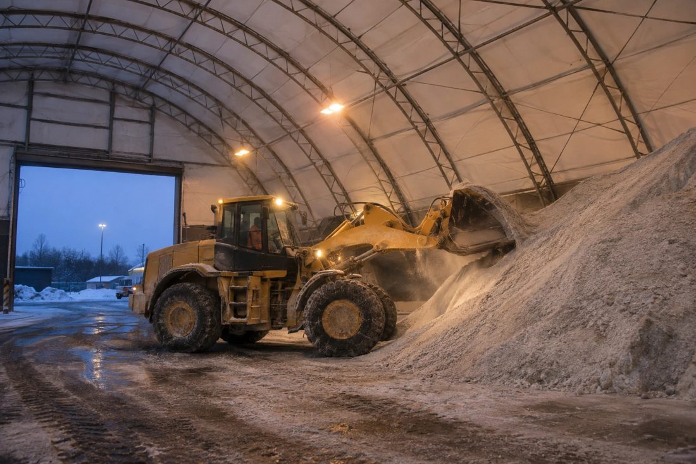

Concept work by Mincheng Li (Honours Mathematics, University of Waterloo): a winter Reel in East-West's own Instagram style, three AI images with the prompts behind them, and a one-day SEO audit.
Open the portfolio and audit (PDF, 8 pages)18 seconds, 9:16, ready for Instagram Reels and YouTube Shorts. Built only from East-West's own photos and claims: since 1958, 20,000+ service calls in 2025–2026 without incident, and morning response by 7:00 AM at high-priority sites. Navy, red and white, bold all-caps type, the "WE CARE" badge and the phone bar, as in the current feed.
Generated with ChatGPT's image tool from documentary-style prompts (full prompts in the PDF). Paste one into ChatGPT and you'll get a photo with the same feel; every run differs.


